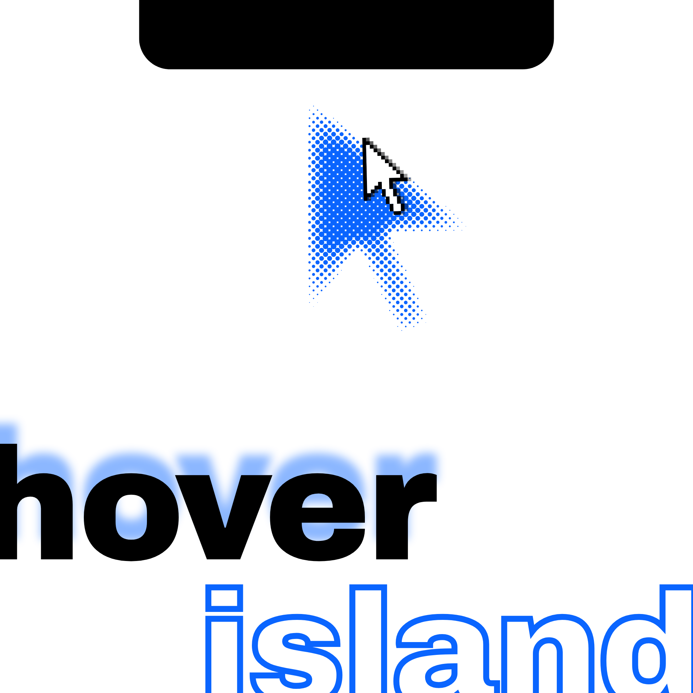

Free for Windows 10 & 11
The notch,
for Windows.
Media, weather, AI usage and file beaming. One hover away.
Sending…
presentation.pdf8.4 MB
Open Files
Dance In The Dark
15:40Lisbon
32°Clear
62%
Free for Windows 10 and 11
Your desktop, one notch better.
A notch on top of Windows. Media, weather, calendar, quick controls and file beaming, with no account to make and no ads to sit through.
- 7themes
- 24visualizer bands
- 5scene presets
- 3docking modes
- 30minute beam links
- 0accounts and ads

One island, your whole day
Rust and Tauri. Light on your PC.
No bundled browser engine, no separate background service, no updater daemon. Hover Island runs in the WebView Windows already ships, docks as a notch, a top bar or a side rail, and springs between a compact pill, an activity peek and the full workspace.
Media
Now playing, with ten ways to see the music.
Album art, player controls and synchronized lyrics when your player reports them. A 24-band visualizer reads your speaker output — ten styles including album-derived ambient lighting. It never touches your microphone.
File beaming
Drag it to the notch. Beam it to your phone.
Drop files on the island and beam them to any phone on your Wi-Fi. Scan the QR shown on your PC; the phone page stages what you send and receives what you add. Files land in Downloads / Hover Island, paired devices only, and the link expires after 30 minutes.
iPhone, Android or any browser. Nothing to install on the phone. Local HTTP over your own Wi-Fi, not AirDrop.
AI usage & reset watch
Know exactly where your limits stand.
Usage comes from recorded provider reports, not guesses. Reset Watch tracks global and banked resets from codex-resets.com and links the original announcement. It never redeems grants or changes quotas.
Calendar, world clock & to-dos
The month, the hour, and the to-do list.
A full month calendar with local editing and read-only Google, Outlook or other ICS subscriptions that refresh every five minutes. A world clock for the cities you work with, and a to-do list that persists.
Weather
Local conditions, at a glance.
Current details with a 24-hour strip and seven-day ranges. Your location comes from your public IP, or search any city and it sticks.
AQI is a modeled value, not a local sensor reading.
Make it yours
Seven themes. Five scenes.
Each theme retunes the accent and material across the island. Five scene presets — Graphite to Paper — layer atmosphere from the pointer, your album art or the audio, and freeze under reduced motion.
Graphite
Contour
Aurora
Ember
Paper
Sizes: Small · Medium · Large
Rust + Taurino bundled browser engine
Lightsmall download, no separate background service
Keyboard-firstAlt + Space island, Ctrl + Space spotlight
No microphonevisualizer reads speaker output
Three dock stylesnotch, top bar or side rail
Local by designphone sharing is HTTP on your Wi-Fi, not a cloud relay
Free, always
Put an island on your desktop.
No account, no subscription, no ads. One small download, and it disappears into your work.
Good questions
Frequently asked
Is Hover Island really free?
Yes. No premium tier, subscription or ads. It's a desktop companion, not a storefront.
Does it use my microphone?
No. The visualizer reads your speaker output through a shared audio session. Microphone input is never requested.
How does file beaming work?
Your phone scans the QR shown on your PC, over the same Wi-Fi. The page stages files before you send, and downloads files you add from the PC. Links expire after 30 minutes. It's plain local HTTP, not AirDrop.
Does it sync Google Calendar or Outlook?
Partially, and read-only. You can subscribe to Google, Outlook or any ICS calendar URL; subscriptions refresh every five minutes and never write back. The local calendar stays editable. Full two-way synchronization isn't offered.
What can I put in the island?
Sixteen widget types, including media, weather, calendar, to-do notes, AI usage, notifications, focus timer, system, PC controls, world clock, website alerts, connections, Reset Watch and the file bucket. Place them in panels you add, rename or remove, and Hover Island opens extra pages when a panel fills up.
What does it need to run?
Windows 11, or Windows 10 with the free WebView2 runtime. Hover Island is built with Rust, Tauri 2 and SolidJS and runs in the system WebView — it installs as a signed package, not a browser app.
Where can it dock?
Three modes: the classic notch on any screen edge, a monitor-wide top or bottom bar, and a full-height side rail that opens into a narrow workspace. A side-attached notch becomes a vertical capsule, and dragging snaps to edge centers.
What system controls are included?
Volume, display brightness, Do Not Disturb, Night Light, power mode, paired Bluetooth devices and a memory optimizer. The optimizer scans and trims eligible background apps' working sets — it closes or suspends nothing, and Windows may page the memory back in. Brightness and Bluetooth actions depend on what your drivers support.
Can it read my Windows notifications or email codes?
Desktop alerts require installing the signed package and granting Windows notification access — the raw executable alone can't listen. Verification-code detection is a separate opt-in: you register your own Google or Microsoft desktop client, sign in, and codes appear in the notch. Nothing is connected by default.
One gesture, end to end
From your phone, into the notch, onto your PC.
The beam down this page is the whole trip: it leaves a phone, gathers in the notch, then lands on your desktop. Any device with a browser can start it, and there is nothing to install on the phone.
- 01Send from any phone
- 02Gather in the bucket
- 03Drop onto the PC
iPhone
Android
Tablet
Any browser
No app to install on the phone. Your PC serves the page over your own Wi-Fi, so any device with a browser can beam to it.
The beam ends on your desktop. No cable, no account, no cloud.